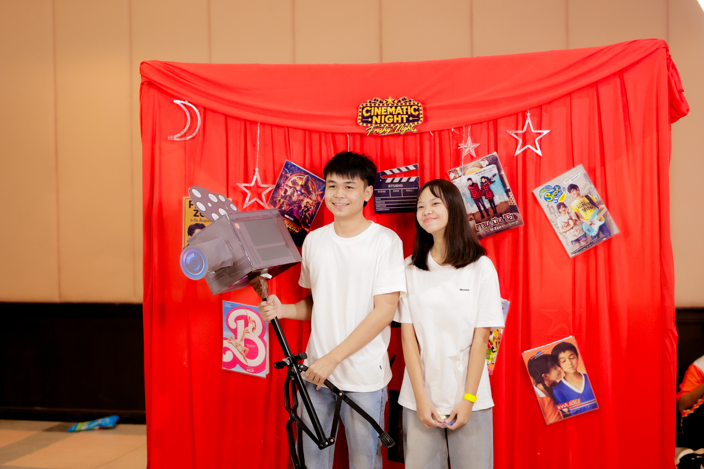
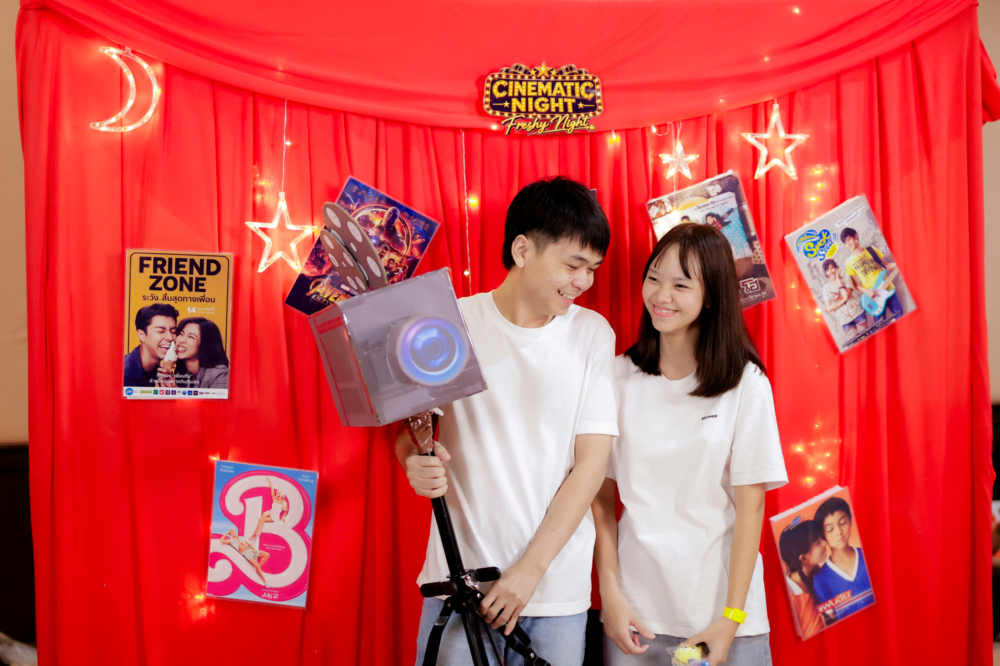
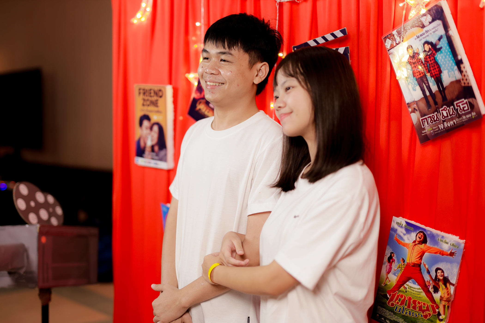
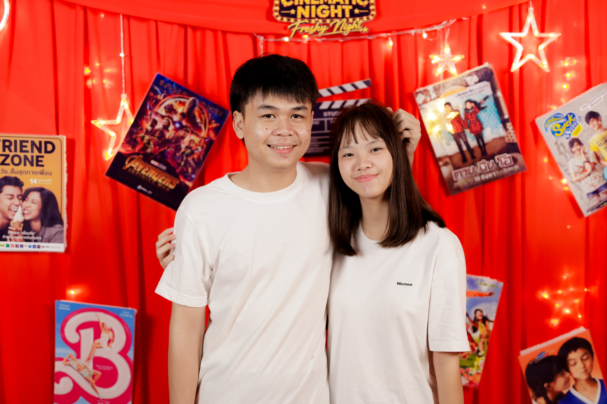
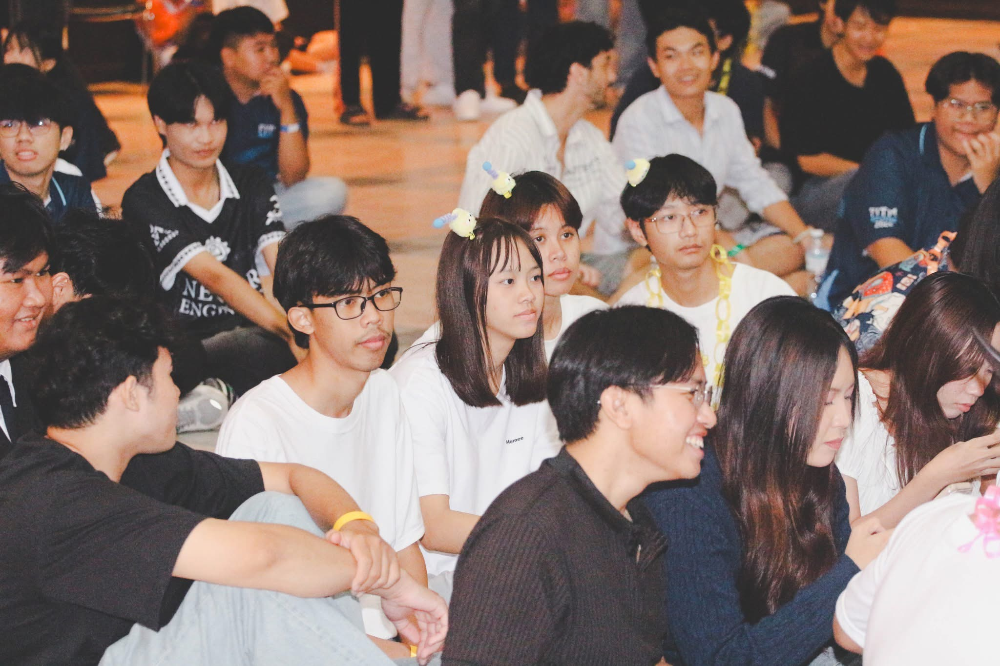
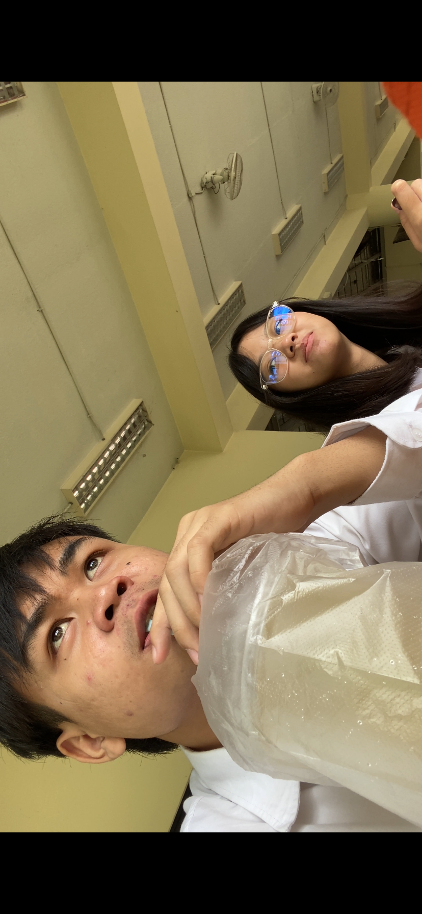
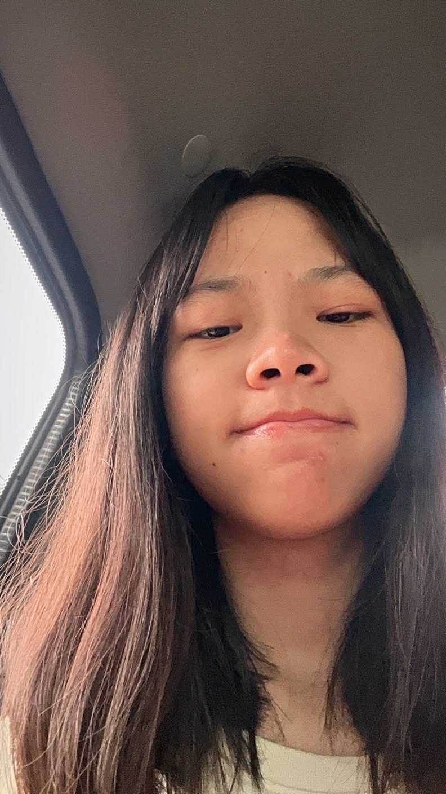

ความทรงจำระหว่างเราสองคน
เรียบเรียงโดย มิสเตอจีเนียส ดอบิ้ก จัดทำ ณ วันที่ 29/9/2569 เวลา 3.31 ตอนไอกาฟิวนอน มีคนช่วยทำโดย Gpt เพื่อรเลิฟ อย่าโกรธเค้าที่ใช้ ai ช่วยนะ เค้าอยากให้มันสวยที่สุด
.JPG)
ชอบรูปนี้มากๆ เทอพยายามช่วยเราสุดๆ เเต่เราก็มึนไม่อ่านอยู่ดีขอบคุณเทอมากๆนะ เค้าชอบมาก 💕
.JPG)
รูปนี้เค้าอกหักเค้าเลิกกันเทอนานที่สุดเลยตั้งแต่คุยกันมา เราเลิกคุยกันไป 1 อาทิต ดีใจมากก ที่เทอทักมาว่าคถ เพราะเราสาบานไว้ว่าจะไม่ทักไป นึกว่าจะได้เลิกกันจริงๆแล้ว
.JPG)
เป็นที่แรกที่เราได้เที่ยวกันแบบจริงจัง สนุกมากๆ ได้พายเรือและวันนั้นอากาศสวยสุดๆ ฝนตก เราเปียกฝนกัน และเป็นครั้งแรกที่เทอหยิบมือถือขึ้นมาถ่ายกับเราแบบจริงจัง แอบเขินนะ 💗
.JPG)
รูปนี้เป็นรูปที่เราเอากล้องใหญ่ถ่ายเทอครั้งแรกขนาดเผลอๆยังน่ารักขนาดนี้ ถ้าถ่ายดีๆคงสวยสุดๆไปเลย และหลังจากนั้นเราก็ทะเลาะกันเรื่องผู้ชาย จนเลิกคุย เราคนบอกเลิกเองแต่เราก็ตัดสินใจลองดูอีกครั้ง เพราะ เทอบอกเทอจะแก้ให้ทุกอย่างอย่าเพิ่งรึบตัดสินกัน แล้วเราก็เลยไปง้อ และก็ดีมากที่ง้อ มันดีมากก ตอนนี้เทอทำให้เราทุกอย่างเลย เราสนุกกันมาก
ไม่มีเรื่องผช ให้คิดมากแล้ว และทุกๆเรื่องเทอก็จะยอมเราตลอด รักนะอ้วน
.JPG)
อันนี้แอ๊บ แต่ก็น่ารักมากๆๆ เราเอาไปตั้งจอมือถือเลยนะกับ macbook ตอนนั้น แต่ตอนนี้มันหายไปแล้ว เทอก็เอาไปตั้งโปรไฟล์ด้วยแหละ แต่เทอลบแล้วก็ไม่เป้นไร เดียวเราถ่ายให้ใหม่นะ
.JPG)
อันนี้ถ่ายคู่กับจีน้อย เราว่าน่ารักมากๆเลย หน้าก็เหมือนๆกัน เราชอบมากกกก ตัวนี้ได้มาจากที่เราบอกเลิกเลยพาไปซื้อง้อ และเทอก็ชอบมันก็เลยดีกันเลย
.JPG)
อันนี้เราทำแย็บๆ แต่เทอก็ไม่สนใจอยู่ดี เราก็เลยทำใจว่ารอบนี้คงไม่เหมือนเดิมหลังจากเลิกมา เเต่ทุกอย่างก็ดีขึ้นเรื่อยๆ พอได้อยู่ด้วยกันจริงๆ
.JPG)
รูปนี้เป็นรูปแรกที่ได้เห็นเทอ แต่ตอนนั้นก็ไม่ได้คิดอะไรเลย มาเริ่มชอบก็คือตอนคาบพละ ก็เลยมาย้อนรูปดูว่าคนไหน มาดูในรูปก็น่ารักดี สวยสุดในแถวเลย
.JPG)
อันนี้วันเดียวกับที่เราซื้อจีน้อยง้อ เราบอกเลิกเองแหละ เลิกไม่ถึงวันเราก็ต้องง้อเพราะว่าที่บอกเลิกเพราะอารมล้วนๆ ไม่ได้อยากเลิกจริงๆ แต่เทอก็ใจร้ายมาก เทอบอกจะไมากลับมา ไม่รู้ว่าได้เล่นตัวไหม เราช็อคมากเราส่งไป เทอบอกอย่าคิดไปเองว่าจะดี เทอบอก 50 50 เราก็เลยจะถอดใจแล้ว แต่เลยลองไปหาตัวจริงดีกว่า
กะว่าลองให้เต็มที่ไม่ได้ก็ไม่เป็นไร ตอนแรกก็เหมือนจะยัง พูดอะไรแรงมาก พาไปกินสเวนเซ่นก็บอกใครอยากกิน ตอนนั้นเราเสียใจมากกะจะไม่ง้อแล้วทำร้ายจิตใจเกินไปแล้ว แต่เทอก็ง้อเรานิดๆ เราก็เลยไปต่อ กว่าจะได้จีน้อยก็ลีลาอยู่ พอได้จีน้อยก็ดีขึ้นเยอะเลย แต่ มึงบอกว่า เดือนหน้าจะซื้อให้กูมั่งนะ ที่บอกเงินออก กูจำไม่ลืมนะ แค่กูไม่อยากทวง
เพราะพูดอะไรไว้ต้องรักษาเอง จะจบเดือน แล้วก็ยังไม่ได้เลย ไอสาสส แต่ไม่เป็นไร เทออาจไม่ค่อยมีเงินแหละ มั้งงง
.JPG)
อันนี้ไม่มีไร กวนตีนเฉยๆ ถ่ายคุ่กับแฟนตัวยง เราชอบแกล้งเทอ แต่เทอก้ชอบโมโห ไม่รุ้เป็นเฮียไรนักหนา แค่แกล้งเล่น
.JPG)
รูปแรกตอนมาห้องนี้เลย ลบไปแล้ว แต่ต้องขอบคุณ google photos เดือนละ 100 ที่สำรองความทรงจำไว้ให้ รักนะ google กาฟิวอาจยัง
.JPG)
มีเด็กงอน เราก็งงว่า มึงงอนเฮียไรวะ กูเพิ่งตื่น ง่วงๆ วันนั้นแกกลับบ้านไปกับแม่ จนถึงวันนี้ 29/9/69 ก็ยังไม่ได้เจอหน้าเทอเลย คิดถึงมากกกๆๆๆๆๆๆๆๆๆๆเลยแหละ
แล้วพอไปส่งถึงรู้ว่าเรื่องอะไร ขอท่ดที่ทำให้ที่รักคิดมากนะครับ เค้ารักเทอมากจริงๆ เเต่เค้าเป้นคนใจดี เค้าปล่อยใครตายไม่ได้หรอก เขาก็ช่วยเหลืออยุ่ กลัวเทอคิดมากเค้าเลยไม่อยากให้เทออ่านอะไร
แต่เชื่อใจเค้า เค้ารักเทอจริงๆ เค้าไม่ได้คิดอะไรแล้ว เค้าขอท่ดที่ทำเทอคิดมากน้า เค้ารักเทอจริงๆ แค่เราปล่อยใครลำบากไม่ได้จริงๆ
.JPG)
อันนี้น่ารักดีมีเด็กไม่ตั้งใจเรียนคอมโปรเลย เราก็เลยมาเล่นด้วยกัน ฮ่าๆ ชีวิตมันก็ต้องผ่อนคลายมาก แต่เราจะไม่พาเทอเสียหรอก เราจะพากันเก่งขึ้น เดี๋ยวทุกอย่างโอเคร มาติวห้องเค้าเลยยย final เจอกันฮับ 💗
.JPG)
รูปนี้อกหัก ที่หายไปนานมาก 7 วันอะไปเขื่อนบ่อยมาก นึกว่าจะได้เลิกกันจริงๆแล้ว แต่ มึงง้อช้าไป กูไม่ได้ติวเลย แต่พอมาง้อแค่แป้ปเดียว ก็ทำให้เราได้ขนาดเยอะมากๆเลย จากคนทำไรไม่เป้น ขอบคุณเทอมากๆนะที่มาช่วยให้เขาผ่านพ้นไปได้
พอคะแนนออกก็พาไปเล่นน้ำตกเลย แต่ไม่มีรูป เพราะเทอก็ไม่ถ่าย เราอะอยากถ่าย แต่เทอดูไม่ค่อยอยากเก็บความทรงจำด้วย เราก็เลยประชดไม่ถ่ายเลย ทุกวันนี้เราก็ไม่ได้ถ่ายเลย ว่าจะกลับมาถ่ายแล้วแหละ รักเขา
.JPG)
รักนะ 💕

รักนะ 💕

รักนะ 💕

รักนะ 💕

รักนะ 💕
.JPG)
และจะรักไปเรื่อย ๆ 💗
.PNG)
อันนี้เราว้าวมากไปส่องรีโพส เริ่มคลั่งแล้ว ได้รู้ว่า ตอนม ปลาย แกน่ารักมากกก ถ้าเป็นแฟนเก่าแกเราคงจับตอก
.PNG)
รูปนี้ตอนแอบชอบใหม่ เราแอบแคปไว้ดูหน้าแก แต่ก็สงสัยว่าทำไม มอมจังเลยเลิกชอบไปแป้ปนึง เพราะนอยด้วย ทำไมเพื่อน ผช รุมร้อมขนาดนี้ เพราะเราเป็นคนหวงมากเราไม่ชอบสุดๆเลย
ไม่ว่าจะคุยกับผู้ชาย หรือ สนิทกับเพื่อนผช เราเป็นคนแบบนี้แหละ คนเก่าแกอาจไม่ได้อะไรแบบนี้ แกเลยไม่รู้ว่าต้องทำตัวยังไง
.PNG)
รูปนี้ไม่มีอะไรมาก แค่รู้สึกว่าตอนคอลกันแกน่ารักดี น่าตาตุ่นๆ เหมือนเด็กละมุนๆ

รูปนี้ฟิวดีมากกก กินหมูทะกับเทอครั้งแรก แต่เทอปวดท้องกินได้ไม่เยอะ เเต่เสียตังเยอะ เค้ากินคนเดียวไม่หมดเลย ล่อไป 6-7 ร้อย แต่เทอก็ช่วยออกน่ารักมาก
แต่หลังๆมึงเนียนบ่อยนะหยอก น่ารักสุดๆเลย พอใส่แว่นเค้าชอบมากๆ มันเข้ากับเทอสุดๆเลย คลิปนี้ก็ลบไปแล้วแต่ยังดีที่เรามี google photos รักจัง

อันนี้คือโมโหมาก เราทะเลาะกันบ่อยเรื่องผู้ชาย แต่เทอก็ยังทำอีกเรารู้เรามั่นใจ ว่าเทอไม่ชอบมันหรอก เพราะเราทั้งหล่อทั้งเท่กว่าเยอะ หยอก 555 แต่กูงงว่า ทำไมมึงไม่เห็นหัวกันบ้างเลย เลยบอกเลิกเลย
เพราะ ก็เห็นว่าเรายืนเราเห้นไม่กลัวทะเลาะกับเราบ้างหรอ เห้นยิ้มคิกคักเลย หรืออาจไม่รู้ว่าเราไม่ได้เลย นิดหน่อยก็คือไม่ได้เรื่องพวกนี้ นั่งชิวเลยนะมึงอะ ถ้ากลัวโดนเลิกก็เเคร์กันบ้าง รู้ว่าไม่ได้คิดอะไรจริงๆ แต่กูไม่ชอบไง ยังจะทำ พูดละขึ้น

มารูปน่ารักต่อ อันนี้เราระบายกลัว ติด F ตอนนั้นเรายังไม่ค่อยสนิทกันมาก เรายังกินเรียบร้อยอยู่ แต่เดียวนี้เราแดกเหมือนหมุแล้ว เราก็ระบายว่าเรากลัวคะแนนไม่ไหว เพราะคอมโปรเป็นวิชาที่เราไม่ได้ติวเลย
และทำไม่ได้เลยด้วยสักข้อ สามข้อเราเครียดมากๆ เรากลัวไม่ได้คะแนนเลย เทอก็ปลอบแต่ไม่ชวยหรอกไอสาส หยอก 5555 เห็นหน้าเทอละน่ารักดีเลยเอามาใส่ตอนนี้คะแนนก็ออกแล้ว ก็ดีกว่าที่คิดเยอะ final อย่าทะเลาะอีกนะ เดียวกู ติด F หิ้ๆ

ไอพม่าหัวเเดงน้อย รูปนี้ตอนย้อมหัวแดงใหม่ๆ มันน่ารักมาก และเข้ากันเทอมาก เค้ารักเค้าหลงเทอเลย ตอนนั้นที่จำได้ แกแม่งโคตรน่ารักเลย เค้ารักเทอ แฟนเค้าสวยที่สุดเลย เก่งที่สุด น่ารักที่สุด นิสัยดีที่สุด ชอบยุ่งกับผู้ชายที่สุด หยอกๆนะอ้วน หยอกตาก ฮ่าๆ
กดที่รูปเพื่อดูรูปขนาดใหญ่ 💗